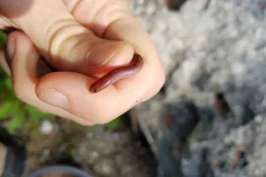
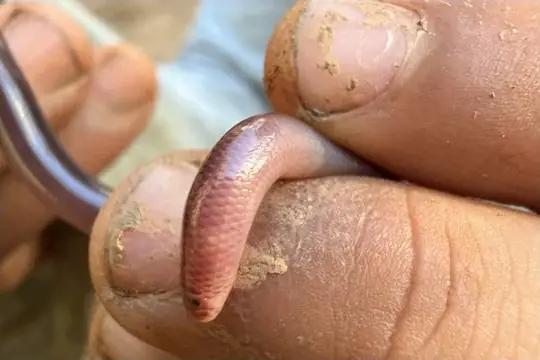
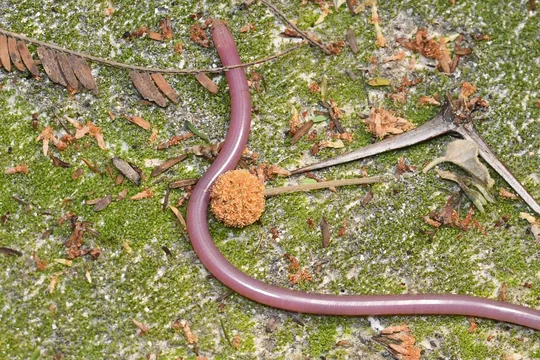
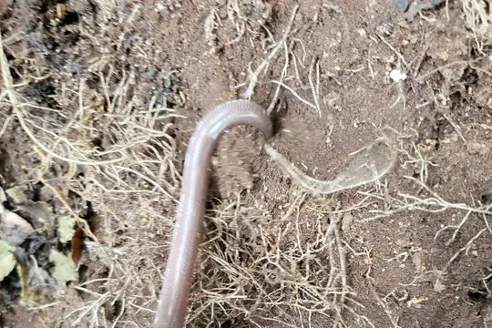
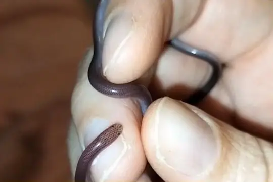
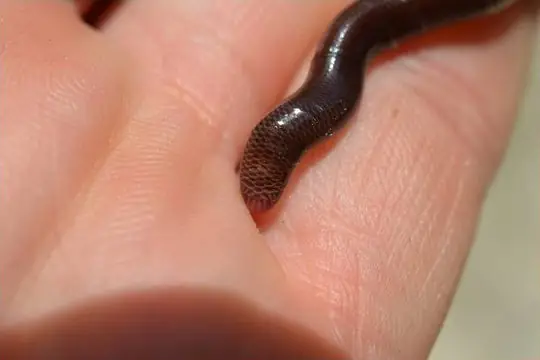

Typhlops
The genus Typhlops (family Typhlopidae) has 20 living species in SnakeList (none venomous), recorded in 5 countries (+1 territory); 1 fossil species is listed separately.
- 20living species
- 20non-venomous
- 5countries
- 1fossil
About the genus
A genus of the family Typhlopidae (blind snakes).
What the name means: Typhlops – from the Greek typhlos (blind) and ōps (eye).[1]
Source
- Meaning of the name Typhlops. Plazi TreatmentBank (Typhlops Oppel, 1811).
Information last reviewed 9 November 2026.
Species
Showing 20 species
- No photo yetBahoruco BlindsnakeTyphlops eperopeus
- No photo yetBarahona Worm SnakeTyphlops syntherus

Earthworm Blind SnakeTyphlops lumbricalis- No photo yetGonave Island Worm SnakeTyphlops gonavensis
- No photo yetHaitian Worm SnakeTyphlops tetrathyreus

Hispaniola Worm SnakeTyphlops pusillus
Island Worm SnakeTyphlops sulcatus
Jamaica Worm SnakeTyphlops jamaicensis- No photo yetLa Hotte BlindsnakeTyphlops agoralionis
- No photo yetLa Selle BlindsnakeTyphlops proancylops
- No photo yetOriente BlindsnakeTyphlops silus
- No photo yetPestel BlindsnakeTyphlops sylleptor

Puerto Rican Worm SnakeTyphlops rostellatus- No photo yetRichmond's Worm SnakeTyphlops capitulatus

Schwartz' Worm SnakeTyphlops schwartzi- No photo yetThomas' Worm SnakeTyphlops hectus
- No photo yetTitan Worm SnakeTyphlops titanops
- No photo yetTyphlops leptolepis
- No photo yetTyphlops oxyrhinus
- No photo yetTyphlops pachyrhinus
No snakes in Typhlops match.
Fossil species
This species is known only from fossils. It is not a living species and is not counted in this page’s totals. The geological age given is approximate: it comes from the rock layers the fossils were found in, and the dating and classification of fossil snakes are revised as new material is studied.
- Typhlops grivensis (middle Miocene, about 12 million years ago)
About the genus Typhlops
- Distribution: living species recorded in 5 countries (+1 territory), on one continent: North America.
- Family: Typhlopidae.
- Countries and territories: Bahamas, Cuba, Dominican Republic, Haiti, Jamaica, Puerto Rico.
Compare its species
Its living species side by side. Lengths come only from SnakeList’s reviewed, sourced accounts; the others are left blank rather than guessed.
| Species | Venom | Recorded in | Adult length (reviewed accounts) |
|---|---|---|---|
| Bahoruco Blindsnake Typhlops eperopeus | Non-venomous | 1 country (North America) | No reviewed account yet |
| Barahona Worm Snake Typhlops syntherus | Non-venomous | 2 countries (North America) | No reviewed account yet |
| Earthworm Blind Snake Typhlops lumbricalis | Non-venomous | 5 countries (North America) | No reviewed account yet |
| Gonave Island Worm Snake Typhlops gonavensis | Non-venomous | 1 country (North America) | No reviewed account yet |
| Haitian Worm Snake Typhlops tetrathyreus | Non-venomous | 1 country (North America) | No reviewed account yet |
| Hispaniola Worm Snake Typhlops pusillus | Non-venomous | 2 countries (North America) | No reviewed account yet |
| Island Worm Snake Typhlops sulcatus | Non-venomous | 2 countries (North America) | No reviewed account yet |
| Jamaica Worm Snake Typhlops jamaicensis | Non-venomous | 1 country (North America) | No reviewed account yet |
| La Hotte Blindsnake Typhlops agoralionis | Non-venomous | 1 country (North America) | No reviewed account yet |
| La Selle Blindsnake Typhlops proancylops | Non-venomous | 2 countries (North America) | No reviewed account yet |
| Oriente Blindsnake Typhlops silus | Non-venomous | 1 country (North America) | No reviewed account yet |
| Pestel Blindsnake Typhlops sylleptor | Non-venomous | 1 country (North America) | No reviewed account yet |
| Puerto Rican Worm Snake Typhlops rostellatus | Non-venomous | 1 territory (North America) | No reviewed account yet |
| Richmond's Worm Snake Typhlops capitulatus | Non-venomous | 1 country (North America) | No reviewed account yet |
| Schwartz' Worm Snake Typhlops schwartzi | Non-venomous | 1 country (North America) | No reviewed account yet |
| Thomas' Worm Snake Typhlops hectus | Non-venomous | 2 countries (North America) | No reviewed account yet |
| Titan Worm Snake Typhlops titanops | Non-venomous | 2 countries (North America) | No reviewed account yet |
| Typhlops leptolepis | Non-venomous | 1 country (North America) | No reviewed account yet |
| Typhlops oxyrhinus | Non-venomous | 1 country (North America) | No reviewed account yet |
| Typhlops pachyrhinus | Non-venomous | 1 country (North America) | No reviewed account yet |